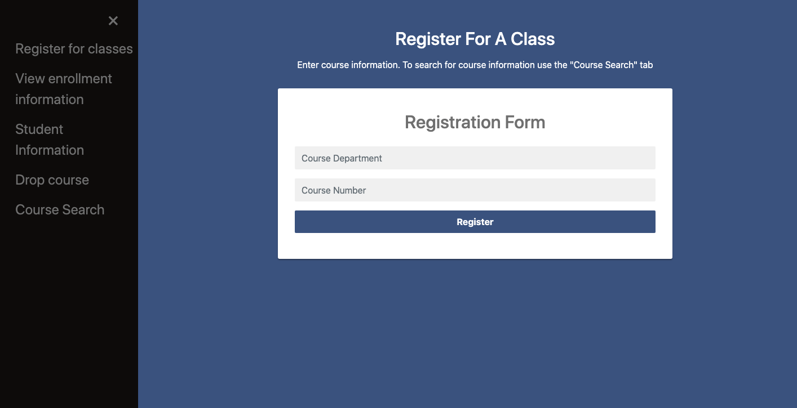
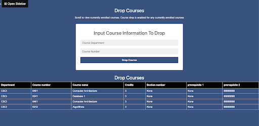

Class Registration Website
HTML, Javscript, CSS, SQL, Python Website
Project Overview
This project is a mock course registration system. The user can log in as a student, faculty, or graduate secretary. The student is able to login into the system and each student has a unique university ID. This ID is unique to their user session. The student is able to view their transcript, search through the course registrar and register for classes. The student is also able to drop any of their added courses. The student is also able to view their own information such as their first name, last name, address, and phone number. They are able to update/edit this information. Faculty are able to log in and be identified by their faculty ID. Faculty are able to search for a transcript by a student’s university ID. They are able to enter a grade for any students currently enrolled in the course. The graduate secretary is able to log in as the graduate secretary and is able to change any grade. Only the graduate secretary is able to change grades more than once. In order to register for a course a student must have previously taken a prerequisite for that course. The faculty members are also able to change their personal information and make updates to it.

Website Mockup
Database Schema
The database consists of 3 main components: user information, static course information, and updating course information. User information includes a table storing login information, and separate tables for each user type(student,faculty, and grad secretary). Some of the information in these tables is able to be edited by the user(such as name, address, phone number, etc) but significant information like university ID or grade cannot be changed. The static course information tables consist of the past transcript table, which holds information for each student’s past courses categorized by ID key, and the course catalog and schedule tables. These tables cannot be edited, but their information can be added to the updating course tables and can be viewed by all users at various points(such as viewing student transcripts, searching for courses in the schedule, and checking prerequisites in the course catalog). Finally, the editable course tables include tables like “verifyCourses,” which is the table that holds all currently enrolled course information. Currently enrolled courses are distinguished by student university ID, and grades can be added by either the grad secretary or faculty member of the particular course. This table is also what gets updated upon course registration, and course drop. These tables are very important as they preserve the integrity of static course tables, and prevent the overall schedule or previous transcripts from being edited or changed in a damaging way. The editable course tables reference the static tables but handle most of the inserts, updates, and deletions from currently enrolled courses.

Class Registration Page + Drop Classes Page
Languages Used
The class registration site used Python in order to keep track of changes in the registration system and what users where logging in. The data was stored using SQL tables. The front end of the website was made using HTML, CSS, and Javascript. The website was then hosted on Amazon Web Servers.